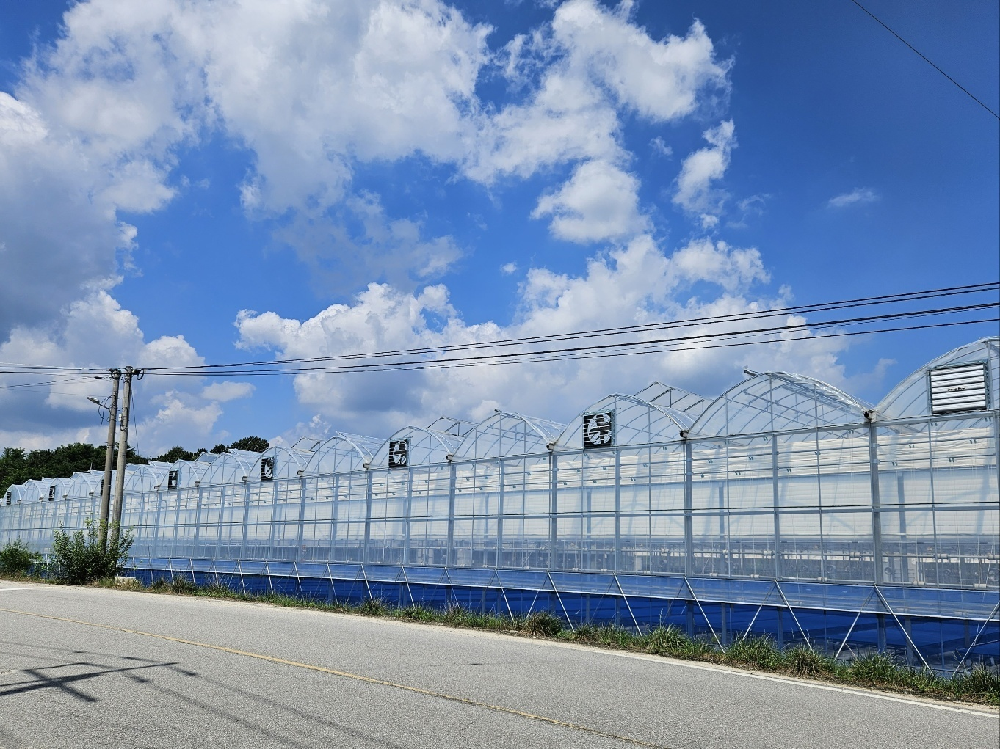
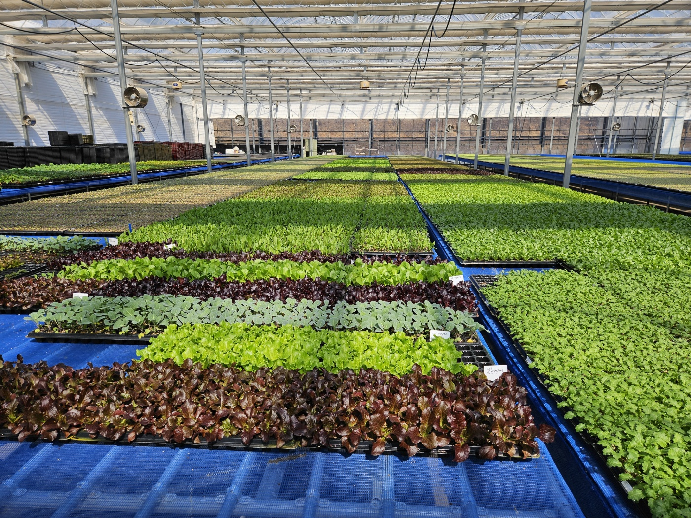
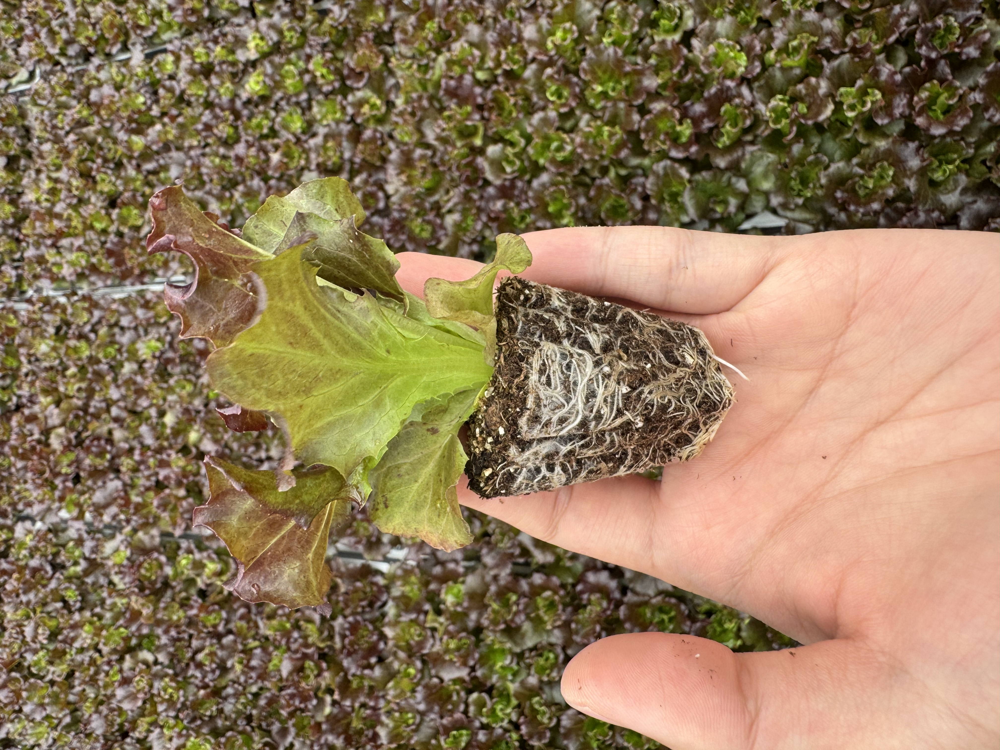
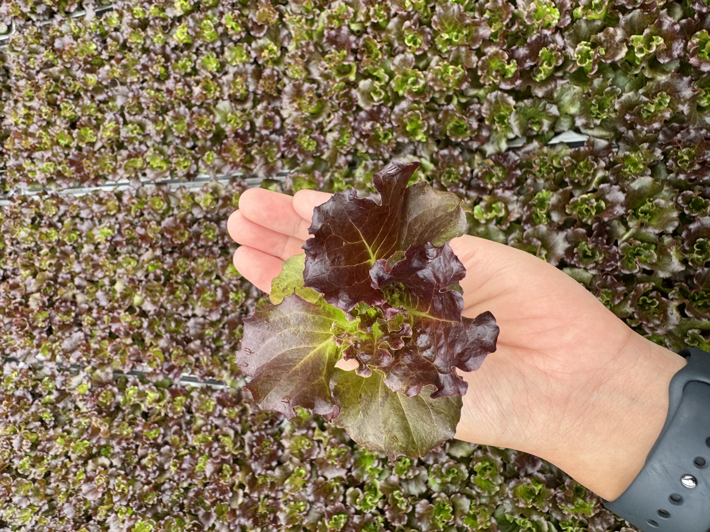

재배·수확
캡션으로 시기·품종을 덧붙이면 신뢰도가 올라갑니다.

어떻게 기르고 가공하는지 보여 주는 영역입니다. 사진은 dangoeul_v260329/docs/manufact을 사용합니다.
캡션으로 시기·품종을 덧붙이면 신뢰도가 올라갑니다.

품질 기준을 짧게 설명해 보세요.




생산11 — 시리즈 확장 이미지

제품 사진과 생산 현장을 한 화면에서 연출할 때 활용할 수 있습니다.